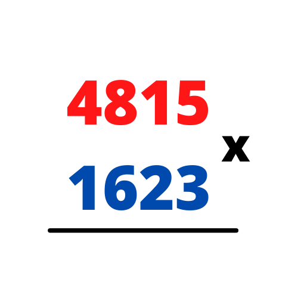
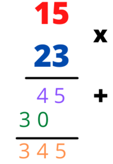
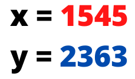
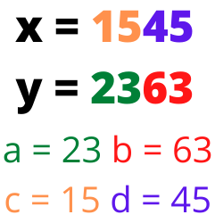

En esta sección te explicaremos que es el algoritmo de Karatsuba, el cual es un algoritmo que nos permite realizar multiplicación rápida, a continuación te contaremos sobre su historia, como funciona, su complejidad en términos de eficiencia, como se compara con la multiplicación normal y su importancia en el mundo de los algoritmos
Hasta 1960, el procedimiento estándar para multiplicar dos números de n-dígitos era el que nos enseñaron en la primaria y usamos durante toda nuestra vida académica, este algoritmo requiere un número de operaciones elementales proporcional a \(n^2\) (por ahora confía en que esto es verdad). Andrey Kolmogorov tenía la conjetura de que este algoritmo era óptimo asintoticamente, lo que significa que cualquier algoritmo para esta tarea iba a requerir mínimo \(n^2\) operaciones elementales. En 1960, Kolmogorov organizó un seminario de problemas matemáticos en la Universidad Estatal de Moscú, donde dio a conocer su conjetura. Una semana después, Karatsuba, un estudiante de 23 años, encontró un algoritmo que multiplicaba números en \(\mathcal{O}(n^{log_{2}(3)})\) pasos elementales, lo que probaba que la conjetura de Andrey Kolmogorov era incorrecta. Sorprendido, Kolmogorov impartió múltiples conferencias sobre el hallazgo de Karatsuba, tiempo despues escribió un artículo mostrando el halalzgo de Karatsuba y lo listó como autor del mismo.
Para poder entender por que el algoritmo de Karatsuba es mas eficiente, tenemos que analizar el algoritmo que ya conocemos y amamos... El algoritmo de multiplicación por fuerza bruta. Este algoritmo es el que la mayoría utilizamos para resolver multiplicaciones en papel. Analicemos el siguiente ejemplo:
Si decimos que \(n\) es la cantidad de dígitos a multiplicar, podemos decir que para este ejemplo \(n = 2\).
Tenemos que multiplicar cada dígito de la parte inferior por cada dígito de la parte superior y guardamos el resultado.
Una vez efectuada la multiplicación en cada dígito inferior, procedemos a sumar cada resultado obtenido.
Al sumar los resultados de cada multiplicación llegamos a la respuesta. ¿Cuántas multiplicaciones se realizaron en total? Se puede apreciar que en total tuvimos que hacer 4 multiplicaciones (y tambien algunas sumas, pero por ahora tomaremos en cuenta solo las multiplicaciones), tomando en cuenta que establecimos que \(n = 2\) podemos decir que se realizaron \(n^2\) multiplicaciones.
Desde el comienzo de las matemáticas, esta era la forma más rápida de realizar multiplicaciones, hasta que llegó Karatsuba y propuso hacer una optimización que consiste en transformar una multiplicación en algunas sumas. Para poder entender esta optimización necesitamos ver la multiplicación de manera diferente, a continuación te mostraremos un ejemplo, con una multiplicacion de 4 dígitos.
El algoritmo de multiplicación que conocemos se puede implementar de una manera recursiva utilizando el paradigma de Divide y Vencerás, para ilustrar este proceso, se tiene el siguiente ejemplo.
Podemos ver que para este caso, \(n = 4\), ya que el número de dígitos a multiplicar es de 4, para aplicar el paradigma de Divide y Vencerás, primero tenemos que pensar en como descomponer este problema en pasos mas pequeños, para lograr esto, primero tenemos que dividir el problema hasta llegar a un caso base.
Podemos observar que el problema ha sido divido a la mitad, a y b son parte de \(y\). c y d son parte de \(x\). Una vez hecho esta fragmentación, tenemos que redefinir nuestra declaración de \(x\) y \(y\).
Para que la separación que hicimos tenga sentido, tenemos que redefinir \(x\) y \(y\) de la siguiente manera:
\(x = (10^{n/2}*c)+d\)
\(y = (10^{n/2}*a)+b\)
Podemos apreciar que el término correspondiente a c está desplazado dos ceros a la derecha debido a que el número total de dígitos es \(n = 4\), por lo que la fórmula queda como \(x = (10^{4/2}*c)+d\). Lo mismo aplica en el caso del término \(y\). Podemos notar que para un caso general, el desplazamiento siempre corresponde a \(10^{n/2}\). Despues de simplificar y sustituir los valores, tenemos: \(x = (10^{2}*15)+45 = 1545\).
Habiendo establecido el porque de nuestras nuevas ecuaciones para \(x\) y \(y\), procedemos a hacer lo que todos estamos esperando, realizar la multiplicación. Esto es un simple producto de binomios.
\(x*y = [(10^{n/2}*c)+d] * [(10^{n/2}*a)+b] = (10^n)ac + (10^{n/2})(ad + bc) + bd\)
Se viene la parte ruda, si no te interesa el análisis de complejidad de este algoritmo, puedes saltarte a la sección de "El hallazgo de Karatsuba".
La expresión \((10^n)ac + (10^{n/2})(ad + bc) + bd\) consta de 4 multiplicaciones básicas*, ac, ad, bc, y bd. Estas operaciones básicas se ejecutan en cada llamada recursiva, y para resolver cada una de ellas se utiliza la misma expresión. Podemos ver
que para cada nivel de recursión, se tienen que efectuar 4 multiplicaciones básicas hasta llegar al caso base, mas adelante visualizaremos esto mediante un árbol, por ahora tendrás que imaginarlo.
Genial! ya sabemos cuántas multiplicaciones se hacen en cada llamada recursiva, ahora tenemos que calcular cuántas sumas básicas** se realizan, esto es un poco más engañoso de lo que parece a simple vista.
Para calcular cuántas sumas básicas hay en nuestro algoritmo tenemos que fijarnos en la longitud \(n\) de los números a multiplicar. Si multiplicamos un número de 2 dígitos por otro de 2 dígitos, obtenemos un número de 4 dígitos. Podemos generalizar que si multiplicamos un número con longitud \(n/2\) por otro número
con longitud \(n/2\) obtendremos un número de longitud \(n\). Saber esto es importante porque analizaremos la longitud de las multiplicaciones en nuestra ecuación para calcular las sumas básicas a realizar.
Tenemos las siguientes multiplicaciones:
\(ac\)
\(ad\)
\(bc\)
\(bd\)
Que obtuvimos de:
\((10^n)ac + (10^{n/2})(ad + bc) + bd\)
Se aprecia que para una suma de longitud \(n = 4\) se realizan \(n\) sumas básicas, esto se va a cumplir siempre.
Ok, ya sabemos cuántas sumas se realizan en el término del medio de nuestra ecuación, ¿Y que hay de los extremos \(ac\) y \(bd\)?
Bueno, las sumas de los extremos no se toman en cuenta, esto se debe a que \(ac\) está siendo desplazado \(n\) lugares a la izquierda, y \(bd\) es de longitud \(n\), ¿Ves lo que sucede?
Si aun no te das cuenta, te lo mostramos en la siguiente imágen:
¿Por que haría una suma básica si simplemente puedo concatenar los dos valores y optimizar? Las cosas se acomodan perfectamente para evitar realizar esta suma.
Entonces, podemos ver que lo único que falta por hacer es la suma de los resultados que ya obtuvimos anteriormente: \((ad + bc) + (ac + bd)\), para el término de \((ad + bc)\) ya establecimos que se necesitan \(n\) sumas básicas,
y para el término \((ad + bc)\) no tuvimos que sumar nada ya que se trata de una concatenación, ahora, para sumar estos dos números tenemos que calcular cuántas sumas básicas se requieren, tenemos un número de longitud \(2n\) que obtuvimos al concatenar \((ac + bd)\)
y otro término de longitud \(n\) que obtuvimos al multiplicar y sumar \((ad + bc)\)
Al sumar estos dos términos podemos ver que los únicos lugares que necesitan una suma son \(n\) lugares, por lo que se realizan \(n\) sumas básicas. En total, obtuvimos que en todo el algoritmo se realizan \(2n\) sumas básicas para cada nivel de nuestra llamada recursiva.
-¿Y a mi para que me sirve saber esto?
Es importante, ya que teniendo esta información podemos hacer una linda relación de recurrencia para analizar nuestro algoritmo de multiplicación mediante el método de Divide y Vencerás
Sabiendo el hecho de que cada llamada recursiva va a realizar \(4\) multiplicaciones básicas y \(2n\) sumas básicas, podemos decir que:
\(T(n) = 4T(n/2) + 2n\)
Utilizaremos el Teorema Maestro para resolver esta recurrencia, podemos apreciar que:
\(a = 4\)
\(b = 2\)
\(2n = \mathcal{O}(n^c), c = 1\)
\({log_{b}(a)} = {log_{2}(4)} = 2\)
\(c < {log_{b}(a)}\)
Podemos ver que nos encontramos en el Caso 1 del Teorema Maestro, por lo que podemos decir que:
\(T(n) = n^{{log_{2}(4)}}\)
\(T(n) = \mathcal{O}(n^2)\)
Ok, muy interesante... Espera... aplicamos el paradigma de Divide y Vencerás, pero aun así ¿La complejidad es la misma que el método por fuerza bruta?
Es correcto, aplicar el paradigma de Divide y Vencerás no es suficiente para mejorar la complejidad de la multiplicación, pero ya estamos mas cerca de la respuesta, Karatsuba encontró la manera de mejorar este algoritmo, en la siguiente sección hablaremos de esto más a fondo.
* Por multiplicaciones básicas se entiende el caso más simple de la multiplicación, es decir, la multiplicación de un número de un dígito por un dígito, cuando \(n = 1\)
** Por sumas básicas se entiende el caso base de la suma, es decir, las sumas más pequeñas que podemos hacer, la acción de sumar un dígito con otro dígito.
Si eres observador te habrás dado cuenta de que el problema radica en que aunque hayamos dividido el problema, aun tenemos que hacer 4 multiplicaciones en cada llamada recursiva,
observemos de nuevo nuestra ecuación:
\((10^n)ac + (10^{n/2})(ad + bc) + bd\)
¿Qué podemos hacer para mejorar esto? la respuesta está en el término \(ad + bc\).
Karatsuba se dio cuenta de que ese término se podía reescribir como:
\((a + b) (c + d) - ac - bd\)
Recuerda que \(ac\) y \(ac\) ya los calculamos anteriormente, ya son los extremos de la primera ecuación. Haciendo uso de esto podemos ver que la primera ecuación se reduce a:
\((10^n)ac + (10^{n/2})[(a + b) (c + d) - ac - bd] + bd\)
Esto es excelente! a cambio de unas sumas básicas extra, logramos reducir las multiplicaciones básicas en cada llamada recursiva. Pero, ¿Cuántas sumas básicas extra son? ¿De verdad este pequeño cambio mejora la complejidad del algoritmo?
De la expresión obtenida despues de aplicar la opmitización de karatsuba, podemos ver que nuestra ecuación ahora tiene \(3\) multiplicaciones, siendo que anteriormente tenían \(4\).
En cuánto a sumas básicas, podemos notar que el término \((a + b) (c + d) \) en total contiene \(n\) sumas básicas, ya que \((a + b)\) realiza \(n/2\) sumas básicas, y \((c + d)\) tambien realiza \(n/2\) sumas básicas.
El resultado de esta multiplicación nos da un número de longitud \(n\), a este número le vamos a restar el término \(ac\), para realizar el análisis, una resta se puede tomar como una suma básica en término de complejidad, entonces, tenemos un número de longitud \(n\) y le restamos
otro número de longitud \(n\), ¿Cuántas sumas básicas realizamos? Como ya demostramos anteriormente, esto nos va a costar \(n\) sumas básicas. Por último, al resultado de esta resta, se le vuelve a restar el término \(bd\), como sucedió con el término anterior, esto tendrá un costo de
\(n\) sumas básicas.
En total, podemos ver que para calcular esta expresión se necesitan \(3n\) sumas básicas. Esto ya implica mas sumas que el enfoque anterior, y aún no terminamos, ya que, como en el ejemplo anterior, nos falta
sumar los extremos.
Sabemos que la suma de los extremos \((10^n)ac + bd\) no se cuenta como una suma básica, ya que simplemente se puede ver como una concatenación, pero, como se explicó en la seccion anterior, el hecho de sumar el resultado de esta concatenación con el resultado obtenido del término del medio nos cuesta una suma básica más, entonces,
en total tenemos \(3n + n = 4n\) sumas básicas.
Ahora que ya tenemos más información acerca del comportamiento de este modelo, sabemos que en total se realizan \(3\) multiplicaciones básicas y \(4n\) sumas básicas en cada nivel de recursión, como puedes ver, se redujo el número de multiplicaciones, pero el número de sumas a realizar ahora es el doble, en términos de Divide y Vencerás esto significa que hay una menor cantidad de subproblemas a resolver, pero la unión del resultado de cada subproblema es más costosa, ¿Cómo afecta esto a la complejidad del algoritmo? ¿De verdad será mas eficiente? Vamos a realizar una relación de recurrencia para averiguarlo, dado los datos obtenidos, podemos decir que:
\(T(n) = 3T(n/2) + 4n\)
De nuevo, utilizando el Teorema Maestro para resolver esta recurrencia, tenemos:
\(a = 3\)
\(b = 2\)
\(4n = \mathcal{O}(n^c), c = 1\)
\({log_{b}(a)} = {log_{2}(3)} \approx 1.58\)
\(c < {log_{b}(a)}\)
Podemos ver que, de nuevo, nos encontramos con el Caso 1 del Teorema Maestro, por lo que el resultado del análisis de la recurrencia es:
\(T(n) = n^{{log_{2}(3)}}\)
\(T(n) = \mathcal{O}(n^{1.58})\)
Esto es fascinante, ya que comprobamos que el cambio que realizó Karatsuba eliminó una multiplicación básica por el costo de añadir algunas sumas básica, debido a esto, la complejidad del algoritmo ha mejorado.
El algoritmo de Karatsuba es teóricamente más rápido que el de la multiplicación por fuerza bruta, pero es dificil apreciar la optimización solo mirando las fórmulas, asi que pondremos ambos algoritmos en acción para ver como se comportan.
Veremos como se comportan ambos algoritmos tratando de multiplicar números de \(100,000\) dígitos, es decir, con un tamaño de problema \(n = 100,000\)
Establecimos que la complejidad de este algoritmo es de:
\(n^2\)
Entonces tenemos que:
¡Uy! Esos son muchas operaciones básicas, el cómputo de esto va a tomar mucho tiempo.
Establecimos que la complejidad de este algoritmo es de:
\(n^{1.58}\)
Entonces tenemos que:
Esto parece ser una cantidad más razonable de operaciones para un número con una longitud tan grande.
¿Cuántas operaciones nos ahorramos para un tamaño de problema \(n = 100,000\)? Hagamos el cálculo.
\(10,000,000,000 - 79,432,824 = 9,920,567,176\)
Podemos ver que nos ahorramos \(9,920,567,176\) ¡Esto es una optimización masiva! podemos ver que todo el trabajo realizado valió la pena.